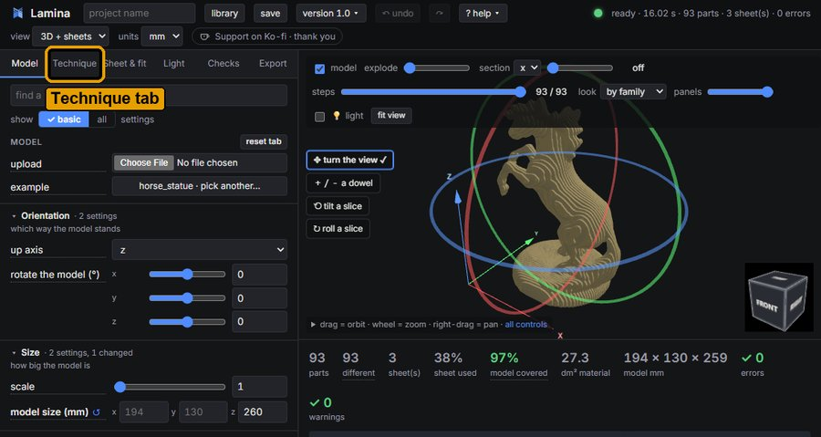
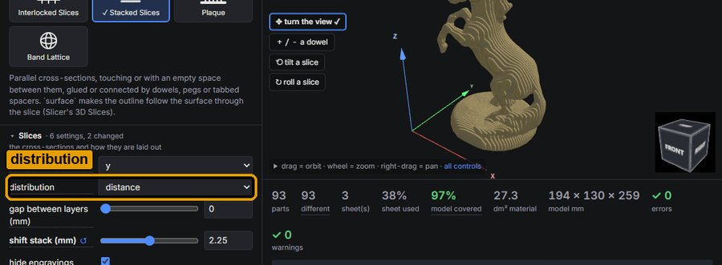
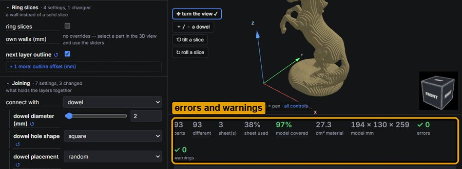
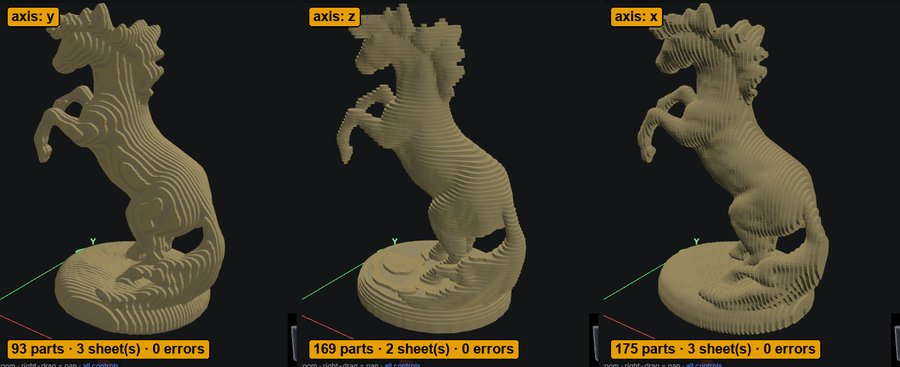
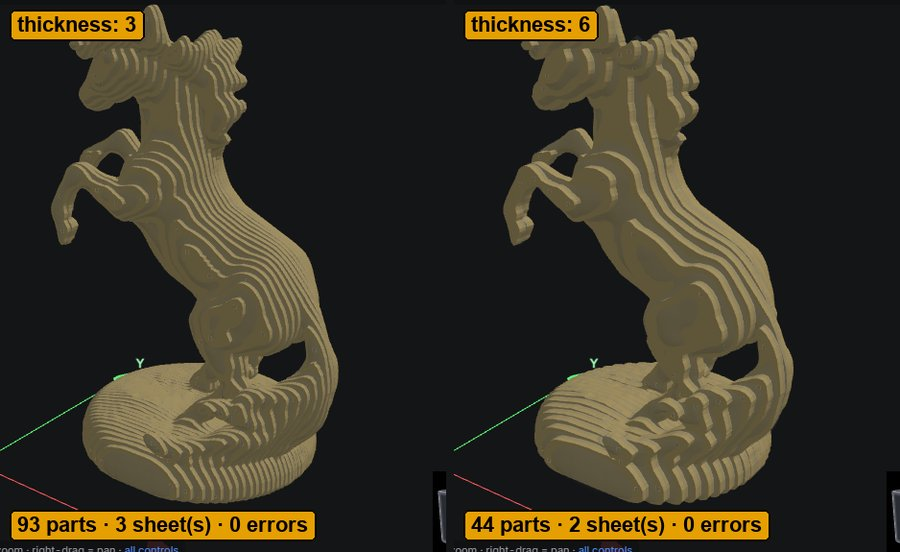
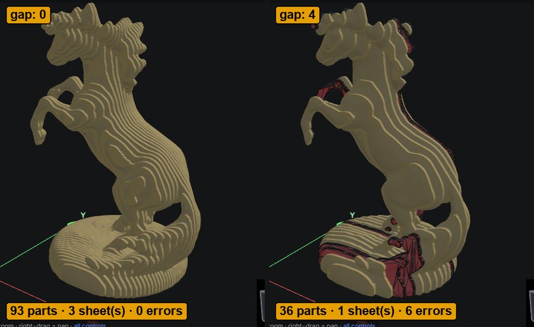
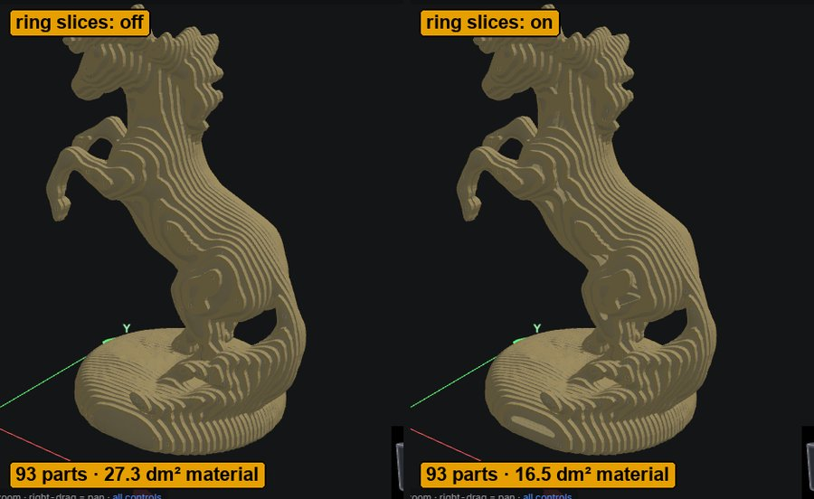
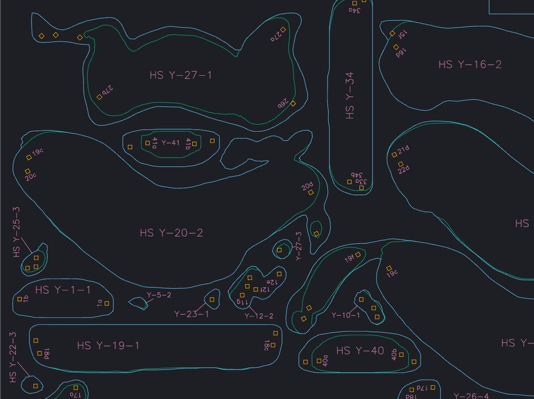
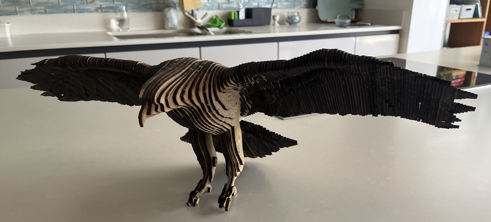

How to make a stacked slice sculpture from a 3D model
A stacked slice sculpture is a pile of flat layers. Each layer is one section of the model, cut from plywood, MDF, acrylic or cardboard. Glued, or held on dowels, the layers make the shape again. This guide uses Lamina, a free laser slicer that runs in your browser.
- 1. Start hereThe steps every job has: your model, its size, the checks, the files. Open
- 2. Your machineLaser, router or 3D printer, the material and its thickness. Open
- 3. Your technique: this pageThe settings of Stacked Slices, and what each one changes.
Which shapes work
Almost every shape. A layer must hold together and must touch the next layer. Thin parts that stand free, such as legs, work best when they lie in the plane of the layers. So the direction of the layers is the first thing to choose.
Set the technique
Every picture on this page shows one model: the horse statue that the link opens. An orange ring with a label marks the control to use. To use your own model, upload it on the Model tab: Start here shows how.
- Open Lamina on Stacked Slices. It opens with the horse
statue cut in layers. Click the Technique tab.

- Set axis to the direction the layers stack. z stacks them up the height. x or y
gives side profiles.

- In distribution, keep distance to put the layers face to face, one sheet thick each. Pick
count to set the number of layers yourself.

- Keep gap between layers (mm) at 0 for a solid stack. Type a gap to let light through.

- In connect with, pick how the layers hold together. Then type the diameter of your rods in dowel
diameter (mm).
- none: glue them face to face.
- dowel: rods through the layers.
- tab: flat pegs cut from the sheet.
- standoff (3D printed): printed posts between the layers.

- Read the errors and warnings under the 3D view after each change. They name each layer that
floats or has no dowel.

What each setting changes
Each picture shows the same horse from the same side, with one setting changed. The label at the bottom gives the counts that Lamina shows under the 3D view.
axis
The direction the layers stack. It changes the number of parts and which thin parts hold together.
On this horse: side profiles (y) make 93 parts. Layers up the height (z) make 169 parts, and each leg is a pile of small discs. Choose the axis first, because the dowels and the sheets follow it.

thickness (on the Sheet & fit tab)
The thickness of your sheet. With distribution on distance, it is also the step between layers.
Twice the thickness gives half the parts and larger steps: 93 parts in 3 mm, 44 parts in 6 mm. It also changes the dowel that fits and the weight.

gap between layers
Empty space between the layers. Light goes through, and the stack needs less material: 36 parts, not 93.
A gap changes what holds the layers. Glue does not work across a gap, so each piece needs a dowel or a standoff. On this horse, a 4 mm gap leaves 6 small pieces without one. Lamina shows them in red and gives 6 errors. Add a dowel there, make the gap smaller, or use the fix buttons under the error.

ring slices
Each layer keeps only a wall, and the middle is cut away. The stack is a shell.
The outside does not change. The material does: 27.3 dm² solid, 16.5 dm² as rings. wall sets the width of the ring. max piece length cuts a long ring into pieces with puzzle tabs, so each piece fits your sheet.

More settings
| Setting | What it does | It changes |
|---|---|---|
| dowel diameter | The size of the rods, pegs or standoff pins. | A thick rod does not fit a thin piece. That piece then has no dowel, and an error names it. |
| dowel placement | aligned: straight rods through the whole stack. random: short pins between two layers. | Aligned rods are quick to put together. Short pins reach pieces that a straight rod does not. |
| hide dowels | A dowel goes only where the layers above and below cover its hole. | No open hole shows on the steps. The first and the last layer still show theirs. |
| hide engravings | Labels, numbers and arrows go only where the next layer covers them. | The top layer stays clean. On at the start. |
| next layer outline | Each layer gets the outline of the next layer engraved on it. | A line to glue by. Click all at the top of the settings to see this row. |
| slice outline | outer cuts each layer to the largest section through its thickness. | You sand the steps down to the shape. This is the old 3D Slices. Click all to see this row. |
| vary the spacing | You draw the distance between layers along the model. | More layers where the shape changes fast, fewer where it does not. |
Then: the machine, the checks and the files
These steps are the same for every technique, so they have their own pages.
- On the Sheet & fit tab, choose your machine, your material and its thickness: Laser, router or 3D printer.
- Correct every error, cut the fit test, and download the files: Start here, steps 10 to 13.
- Put the layers on the dowels in order, dry, before you use glue. Then glue them.

Made with stacked slices

Charging bull on a rock
by Colin Robinson

Eagle with spread wings
by Colin Robinson

Freddie Mercury bust
by Julia

Roman statue in relief
on dowels, by Julia
More in the gallery. For slices that slot together instead, see interlocking slices.